Entrega consolidada de las cuatro tareas: monitorización de escalado de microservicios ECS, asignación de coste por transacción, Infraestructura como Código con Terraform, y gestión de un incidente de producción. Incluye implementación IaC validada estáticamente y documentación de diseño.
Nota sobre estados de cobertura: IMPL = implementado y validado estáticamente · DIS = diseñado y documentado · EJ = ejemplo ilustrativo · AWS? = requiere entorno AWS autorizado para verificación en runtime.
Deuna! procesa transacciones monetarias (pagos, transferencias, retiros, recargas) y no monetarias (onboarding, actualización de perfil, consulta de saldo) sobre una arquitectura de microservicios en AWS (ECS, Aurora PostgreSQL, S3, Lambda, API Gateway, SQS) con una plataforma de observabilidad externa que ingiere CloudWatch Logs. Esta entrega cubre las cuatro tareas del assessment.
AWS Data Exports CUR 2.0 vía Athena.payments-processor basada en evidencia, con
mitigación condicional e integridad de transacciones financieras.Se priorizan capacidades nativas de AWS (credenciales gestionadas por RDS, S3 Bucket Keys, bloqueo de
estado nativo de S3, Database Insights). La seguridad aplica mínimo privilegio, defensa en profundidad, cifrado
en reposo y tránsito, red privada y separación de funciones. La eficiencia de coste se logra con Bucket Keys,
lifecycle de S3, monitorización standard de Database Insights, dimensionado dev<prod y estimaciones
por fórmula (sin inventar precios de AWS).
apply). Las Tareas 1, 2 y 4 son diseños/runbooks. No se desplegó ni modificó ningún
recurso AWS, no se ejecutó terraform plan/apply real y no se solicitaron credenciales.
La plataforma es de alto volumen y los flujos monetarios son críticos: la latencia y la integridad de las transacciones impactan directamente a clientes y a obligaciones de negocio. Supuestos explícitos de la entrega:
| Supuesto | Tratamiento |
|---|---|
Región us-east-1 | Ejemplo configurable; no es la región real de Deuna! |
| Account IDs, VPC, subredes, ARNs, SGs | Placeholders; no se usan identificadores reales |
| Cifras de coste (Tarea 2) | Sintéticas; no son costes ni precios reales de AWS |
| SLO de latencia / retención de backups | Supuestos operativos propuestos, no requisitos verificados |
| Instrumentación de aplicación (éxito de pagos, trazas) | Recomendada; su existencia no se confirma |
| Causa raíz del incidente (Tarea 4) | No asumida; se determina por evidencia |
Principios aplicados de forma transversal: mínimo privilegio, defensa en profundidad, cifrado en reposo (KMS CMM) y en tránsito (TLS), acceso de red privado, separación de funciones, aislamiento de entornos, gestión segura de credenciales, trazabilidad, reproducibilidad y protección contra destrucción accidental, siempre con controles conscientes de coste.
Servicios como CloudTrail, AWS Config, GuardDuty o Security Hub se documentan como recomendaciones y no se activan para no incurrir en coste no solicitado. Pasar los escáneres estáticos no implica cumplimiento de PCI DSS, ISO 27001, SOC 2 ni regulación financiera.
Problema: detectar, alertar y visualizar cuándo un microservicio ECS alcanza su número máximo de tareas y degrada latencia. Hallazgo verificado: AWS no publica un evento dedicado de "capacidad máxima"; alcanzar el máximo es una condición de estado (desired == maxCapacity), no un suceso emitido.

Una única Lambda detector inventaría los scalable targets (DescribeScalableTargets),
correlaciona estado (DescribeServices, DescribeScalingActivities) y métricas
(GetMetricData), y clasifica cada servicio con precedencia
PLACEMENT_BLOCKED > SATURATED > AT_CAPACITY_LIMIT > APPROACHING_LIMIT > NORMAL (y
UNKNOWN si la telemetría está obsoleta). Distingue alcanzar el límite de la saturación real
(CPU/memoria por encima del objetivo en el máximo) y de la imposibilidad de colocar tareas.
| Estado | Condición (configurable) | Severidad |
|---|---|---|
| APPROACHING_LIMIT | desired ≥ 80% · max | warning |
| AT_CAPACITY_LIMIT | desired ≥ max (operando bien) | warning |
| SATURATED | en el máximo y CPU/mem > objetivo o SLI degradado | critical |
| PLACEMENT_BLOCKED | running < desired tras grace, con pending/placement failure | critical |
| UNKNOWN | config/telemetría ausente u obsoleta | warning |
Se preserva la política del escenario (target tracking al 60% CPU/memoria) y se aclara el comportamiento real:
el escalado no añade "exactamente 1 tarea" por umbral, respeta cooldowns, y running puede exceder
temporalmente desired durante un despliegue.

Clave de correlación estable accountId#region#clusterName#serviceName#alertCondition. Visibilidad
inmediata al alcanzar el máximo; 3 observaciones consecutivas antes de paginar por saturación; histéresis de
recuperación; supresión de repetición; consciente de despliegues (no suprime saturación real); entrega
at-least-once con idempotencia aguas abajo y reconciliación de notificación.
{ "schemaVersion":"1.0.0", "eventType":"ALERT_STATE_CHANGE", "severity":"critical",
"status":"SATURATED", "serviceName":"payments-processor", "environment":"prod",
"correlationId":"inc-payments-20261124-0001", "desiredCount":10, "runningCount":10,
"maxCapacity":10, "cpuUtilization":82.0, "memoryUtilization":70.0, "scalingTarget":60,
"serviceLevelIndicators":{ "p99LatencyMs":4300, "errorRatePct":2.1 },
"recommendedAction":"Engage on-call; inspect Aurora and external provider before scaling" }Valores sintéticos. El detector observa y alerta; no incrementa automáticamente la capacidad máxima (podría trasladar la saturación a Aurora o al proveedor de pagos).
| Service | Desired | Running | Max | Cap. | CPU | Mem | p99 | State |
|---|---|---|---|---|---|---|---|---|
| payments-processor | 10 | 10 | 10 | 100% | 82% | 70% | 4.3s | SATURATED |
| transfers-service | 8 | 8 | 10 | 80% | 61% | 55% | 1.9s | APPROACHING |
| balance-service | 4 | 4 | 12 | 33% | 38% | 44% | 0.4s | NORMAL |
| onboarding-service | 6 | 5 | 8 | 75% | 49% | 52% | 1.1s | PLACEMENT_BLOCKED |
| notifications-service | 3 | 3 | 6 | 50% | — | — | — | UNKNOWN |
Detalle completo: docs/01-ecs-scaling-monitoring.md. Integración con observabilidad
externa vía CloudWatch Logs (grupos dedicados, cifrado con la CMK de carga, agnóstico de proveedor).
Estima el coste aproximado por categoría combinando telemetría de uso (OpenTelemetry, no muestreada)
y facturación AWS Data Exports CUR 2.0, procesadas por Athena. Verificado: CUR 2.0 no
da coste por transacción de negocio; el coste por transacción es una estimación por ponderación de consumo.


Clasificación canónica en el borde (no cabeceras de usuario). Tags de AWS para dimensiones de infraestructura
(Application, Environment, Owner, CostCenter) y telemetría para categoría/tipo/atribución
individual. No se crean métricas de alta cardinalidad por transactionId.
| Servicio | Dimensión de facturación | Driver de atribución | Tipo |
|---|---|---|---|
| API Gateway | requests, transferencia | requests | directo/estimado |
| Lambda | GB-seconds, invocaciones | GB-seconds | directo/estimado |
| ECS (Fargate) | vCPU-h + GB-h (Split Cost Allocation) | vCPU-s | estimado/compartido |
| Aurora | instancia/ACU-h, almacenamiento, I/O | proxy de consumo (no facturable directo) | estimado/compartido |
| SQS | requests (bloques 64 KB) | requests | directo/estimado |
| S3 | GB-mes, requests, transferencia | GB-mes + requests | estimado/compartido |
Modelo híbrido: coste directo, variable compartido, fijo compartido, capacidad ociosa (visible por separado) y no asignado. Ecuación para transacción i, recurso r, ventana w:
allocated_cost(i,r,w) = eligible_cost(r,w) * ( weight(i,r,w) / Σ_j weight(j,r,w) )Conteo canónico: una transacción de negocio = un transactionId; los reintentos (attemptId)
suman consumo pero no al denominador. Se distingue coste marginal, asignado y totalmente
cargado (reparto explícito de la ociosa por cuota de coste asignado).
| Pool | Total | Monetario | No monetario | Ocioso/No asignado |
|---|---|---|---|---|
| API Gateway | 90.00 | 30.00 | 60.00 | 0.00 |
| Lambda | 120.00 | 60.00 | 60.00 | 0.00 |
| ECS | 200.00 | 90.00 | 60.00 | 50.00 |
| Aurora | 240.00 | 100.00 | 50.00 | 90.00 |
| SQS | 20.00 | 16.00 | 4.00 | 0.00 |
| S3 | 30.00 | 12.00 | 18.00 | 0.00 |
| Observabilidad | 40.00 | 24.00 | 16.00 | 0.00 |
| Overhead compartido | 60.00 | 0.00 | 0.00 | 60.00 |
| Total | 800.00 | 332.00 | 268.00 | 200.00 |

Reconciliación: eligible = allocated + idle + unallocated + rounding_residual → 800 = 600 + 200 + 0 + 0.
Controles de calidad (cobertura de clasificación, % asignado, diferencia de reconciliación ≤ 1%) y dashboards de
Producto/Finanzas/Infraestructura. SQL de referencia en docs/examples/transaction-cost-allocation.sql
(no ejecutado contra Athena). Las cifras son sintéticas; no son costes ni precios
reales de AWS.
Única tarea con código desplegable, validada estáticamente (sin apply). Aprovisiona (como
código) una CMK de carga, un bucket S3 seguro, un clúster Aurora PostgreSQL y el secreto pgadmin
gestionado por RDS; más bootstrap de estado remoto y entornos dev/prod.

| Módulo | Responsabilidad |
|---|---|
modules/kms | CMK simétrica, rotación, alias, política de mínimo privilegio |
modules/s3 | Bucket SSE-KMS + Bucket Keys, versionado, lifecycle, política de denegación |
modules/aurora | Clúster, subnet group, SG, parámetros (TLS), logs, monitorización |
modules/secrets-manager | Política de recurso del secreto gestionado por RDS |
bootstrap · environments/{dev,prod} | Estado remoto; composición por entorno |
Política de clave con 5 sentencias: habilitación IAM del root (anti-lockout), administración (sin cripto), uso
(consumidores con kms:ViaService + kms:CallerAccount), grants sólo para recursos AWS
(kms:GrantIsForAWSResource) y CloudWatch Logs acotado por contexto de cifrado. En las políticas de clave,
Resource:"*" se refiere a la propia clave (no es acceso de principal sin restricción). Protección
contra borrado accidental: prevent_destroy = true (sólo protege Terraform) + controles IAM/alarma sobre
ScheduleKeyDeletion recomendados en producción.
# modules/kms/main.tf (extracto) - uso restringido por servicio y cuenta
condition { test = "StringEquals" variable = "kms:ViaService" values = local.via_services }
condition { test = "StringEquals" variable = "kms:CallerAccount" values = [local.account_id] }StringNotEquals+Null=false permite peticiones sin cabecera (cifrado
por defecto) sin crear un bypass; bloqueo público ×4; force_destroy=false; lifecycle.rds.force_ssl); backups + PITR; Enhanced Monitoring con rol dedicado; Database Insights
standard; prod: writer+reader, deletion protection, snapshot final.manage_master_user_password nativo (sin random_password, sin
secret_version, sin Lambda); cifrado con la CMK; rotación nativa de RDS; pgadmin sólo
administrativo; los microservicios usan identidades de BD dedicadas.

| Parámetro | Dev | Prod |
|---|---|---|
| Instancias Aurora | 1 | 2 (writer+reader) |
| Clase | db.t4g.medium | db.r6g.large |
| Backups / Logs | 7 / 30 días | 14 / 90 días |
| Enhanced Monitoring | 60 s | 15 s |
| Deletion protection / snapshot final | off / omitido | on / requerido |
Estado remoto con use_lockfile = true (bloqueo nativo S3; sin DynamoDB). El aislamiento
de entornos por claves de estado distintas no es una frontera de seguridad completa por sí sola: requiere
políticas IAM acotadas por prefijo (env/dev/* vs env/prod/*). Reproducibilidad vía Docker
multi-arch (ARM64 probado; AMD64 soportado por diseño) y CI de validación. No se verifica que la versión de motor o
la clase de instancia de ejemplo sean desplegables en una cuenta real.
Escenario (hechos conocidos): 02:47, payments-processor en 10/10 tareas, p99 > 4 s. La causa
raíz no se asume: puede ser cómputo ECS, Aurora o un proveedor de pagos externo.
Ventanas objetivo (propuestas, no reales): T+0–5 ack e impacto; T+5–15 diagnóstico; T+15–30 mitigación y verificación; T+30 estabilización. El diagnóstico empieza por impacto de cliente/negocio antes de tocar infraestructura: negocio → ECS → red (ALB condicional) → Aurora → dependencia externa → cambios recientes.

| Hipótesis | Evidencia clave | Mitigación segura |
|---|---|---|
| Saturación de cómputo ECS | CPU/mem > objetivo en el máximo | Subir max incremental si hay headroom |
| CPU/locks/conexiones Aurora | DBLoad/locks/connections | Reducir concurrencia; no añadir tareas ECS |
| Proveedor externo degradado | span externo domina el p99 | Backoff+jitter, circuit breaker |
| Amplificación de reintentos | intentos ≫ transacciones | Presupuesto de reintentos |
| Regresión por despliegue | correlación temporal con release | Rollback si no hay migración irreversible |
# Ejemplo sintético: subir el TECHO (max) 10->15, preservando min y políticas.
aws application-autoscaling register-scalable-target \
--service-namespace ecs --resource-id "service/$CLUSTER/payments-processor" \
--scalable-dimension ecs:service:DesiredCount --min-capacity 2 --max-capacity 15Se distingue max (techo) de desired (lo fija Auto Scaling). Integridad financiera: identificadores
estables + idempotencia; timeouts externos ambiguos como PENDING/UNKNOWN (nunca FAILED
automático); reconciliación antes de reintentar. La recuperación de infraestructura no basta si quedan
transacciones inconsistentes.
Plantillas para equipo técnico, producto y C-Level con cadencia por severidad, sin inventar cifras ni ETA.
Criterios de recuperación explícitos (p99 en SLO, éxito de pagos en baseline, tareas convergidas, Aurora estable,
transacciones reconciliadas). Postmortem sin culpables con causa raíz explícitamente pendiente y
acciones correctivas mapeadas a hipótesis. Detalle en docs/04-production-incident.md.
Recomendaciones condicionadas (no activadas por coste/alcance): CloudTrail (incl. S3 data events), AWS Config, GuardDuty, Security Hub, logging de seguridad centralizado.
standard (retención PI gratuita de 7 días) frente a advanced
(465 días, mayor coste), con un bloque check que valida la coherencia si se elige advanced.Toda la validación es estática y se ejecuta en el contenedor de tooling. No es prueba de un despliegue exitoso en AWS.
| Validación | Resultado real | Ejecución |
|---|---|---|
| Docker build (ARM64 nativo) | PASS | Fase 1 (heredado) |
| terraform fmt -check | PASS | Fase 4 (re-ejecutado) |
| terraform validate (bootstrap/dev/prod) | PASS ×3 | Fase 4 |
| TFLint (+ ruleset AWS) | 0 issues | Fase 4 |
| Checkov 3.4.6 | 138 passed · 0 failed · 24 skipped (documentados) | Fase 4 |
-backend=false), validate, TFLint,
Checkov. No ejecutado: terraform apply, terraform plan real contra AWS, SQL contra
Athena. No se solicitaron credenciales ni se desplegaron recursos. ARM64 probado; AMD64 soportado
por diseño (no probado por separado). El comportamiento en producción requiere verificación en una cuenta AWS
autorizada.
make setup && make check # validación local (no despliega AWS)
cd docs/tooling && PUPPETEER_SKIP_DOWNLOAD=true npm install
bash docs/tooling/render-diagrams.sh # renderiza los 10 diagramas (SVG+PNG)
node docs/tooling/build-pdf.mjs # genera el PDF consolidadoMatriz completa por requisito en docs/evaluation-matrix.md. Resumen de cobertura:
| Tarea | Cobertura | Estado |
|---|---|---|
| Tarea 1 — ECS scaling monitoring | Detección, observabilidad, alertas, dedup, dashboard | DIS |
| Tarea 2 — Coste por transacción | Clasificación, propagación, atribución, CUR 2.0, pipeline, reporting | DIS/EJ |
| Tarea 3 — Terraform | KMS, S3, Aurora, Secrets, estado remoto, validación | IMPL |
| Tarea 4 — Incidente | Diagnóstico, causa raíz, mitigación, comunicación, postmortem | DIS |
Dimensiones de evaluación (evidencia, sin notas): profundidad técnica, seguridad AWS, calidad
Terraform, eficiencia de coste y claridad de entrega → ver docs/evaluation-matrix.md.
terraform plan/apply real: versión de motor, ARNs, rotación efectiva del secreto y persistencia
de la política de recurso requieren una cuenta AWS autorizada.prevent_destroy protege sólo operaciones de Terraform (no la API directa).kms:ScheduleKeyDeletion salvo roles break-glass; alarma sobre ese evento.pgadmin sólo administrativo.La entrega cubre las cuatro tareas con una separación honesta entre implementación (Tarea 3, validada estáticamente) y diseño (Tareas 1, 2 y 4). Las decisiones priorizan capacidades nativas de AWS, seguridad de mínimo privilegio y defensa en profundidad, y eficiencia de coste, manteniendo trazabilidad a los requisitos y transparencia sobre lo que requiere un entorno AWS autorizado para verificarse. No se desplegó infraestructura real.
use_lockfile): developer.hashicorp.com/terraform/language/backend/s3No se incluyen registros de conversación ni prompts de desarrollo. No se inventan versiones, precios ni títulos de documentación.